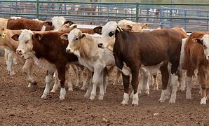
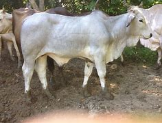
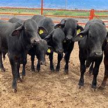
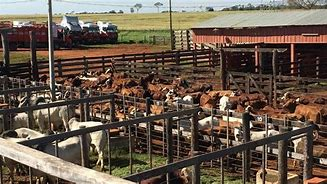

Compra y venta de becereros "Rancho la curva"
Aqui se encuentra todo tipo de animales, puedes vender o comprar animales finos o simples a un buen precio,tenemos diferentes precios conforme peso, edad, y raza del bovino que quiera vender.
Te mostramos aqui algunos de nuestros ejemplares:
  Nos puedes encontrar en el municipio de Francisco I madero,panuco de coronado, Dgo. "Rancho la curva" ubicado para la salida del ya mencionado municipio, carretera para el municipio 28 de mayo.
Para mas informacion comunicate al 676-120-3200 o al telefeno 677-890-3756. Nuestras redes sociales:
Dueño del rancho: Jose Adrian Carreon te puedes comunicar personalmente con el al telefono 680-987-3046 Comprador: Alejandro Martinez te puedes comunicar personalmente con el al telefono 677-003-8942 Secretatia: Maria Sifuentes te puedes comunicar personalmente con ella al telefono 666-510-0721